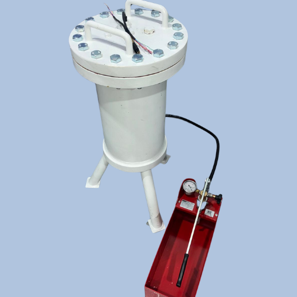

An advanced hydrostatic testing solution for components and electronics: technical reliability, real-time monitoring and scalability for demanding industrial environments.
Get in touch →
The cylinder enables pressure testing with a high degree of control, traceability and functional monitoring, reducing uncertainty in the critical phases of development, validation and qualification. Its technical design adapts to different test scenarios and supports evolving configurations as project needs change. The ability to monitor electrical signals in real time inside the chamber is a differentiating advantage for advanced functional tests where the operational integrity of the component is decisive.
Reduce risk in validation processes, accelerate technical decisions and build confidence in the real-world performance of components before field deployment.
Testing and monitoring devices under pressure delivers critical information to optimise designs, anticipate failures and shorten development cycles.
Subconn electrical connector (Micro series) plus dual heavy-gauge fibre optics — one for lighting, one for image transmission from inside the cylinder — to follow component behaviour live.
Suited to validation testing of components destined for marine environments at low, medium and high depth: sensors, connectors, electronic enclosures, instrumented sub-assemblies, mechanical parts and devices requiring functional verification under pressure.
Designed following criteria aligned with the requirements of classification societies such as Bureau Veritas, Lloyd’s Register and DNV. In Spain, pressure equipment is governed by Royal Decree 809/2021 (as covered by ASEMHS), reinforcing a rigorous approach to safety and conformity in design, manufacture and validation.
Contact our team to discuss technical capabilities, availability and scheduling options.
info@marexi.com